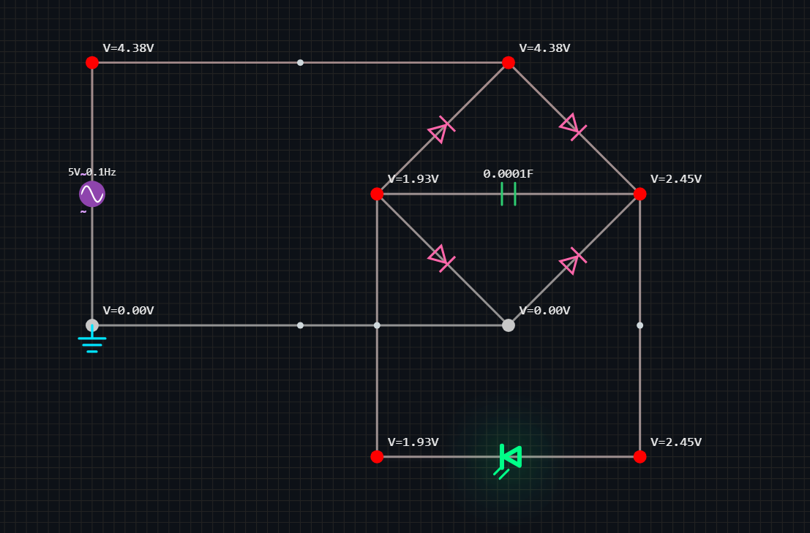

Browser-Based Circuit Simulation
Build and simulate electronic circuits in real time.
NodeLab is a modern interactive circuit editor designed for rapid prototyping, experimentation, and visualization. Create circuits node-by-node with live voltage simulation, animated current flow, glowing wires, and responsive tools.
